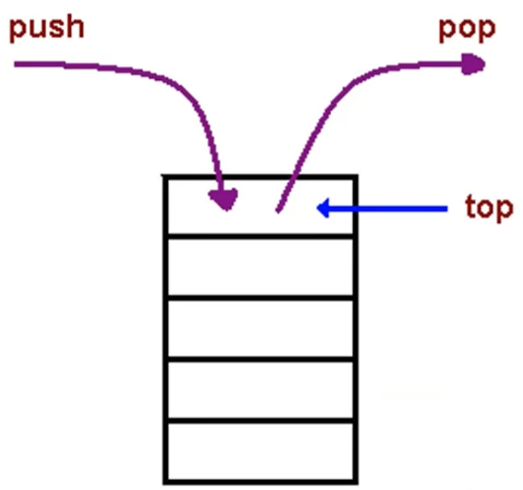
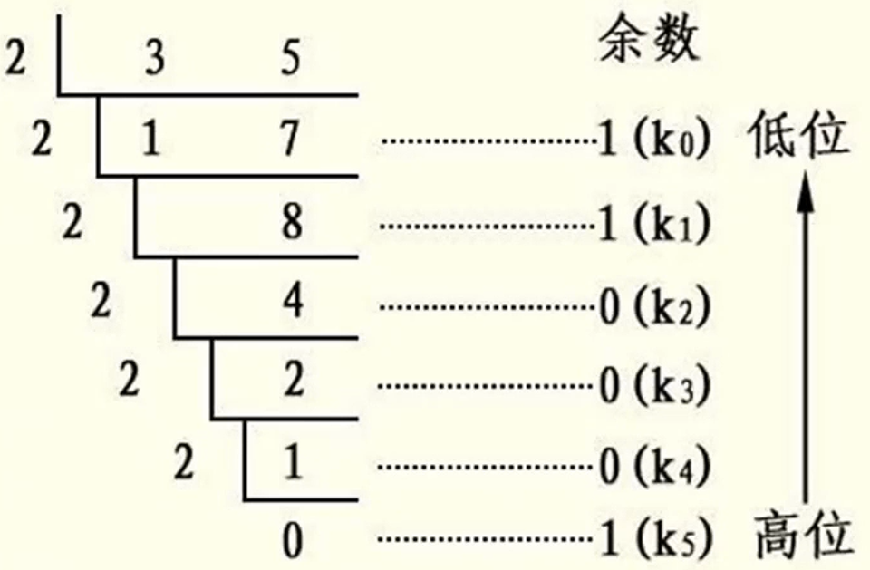
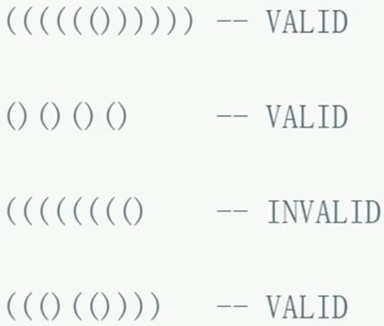
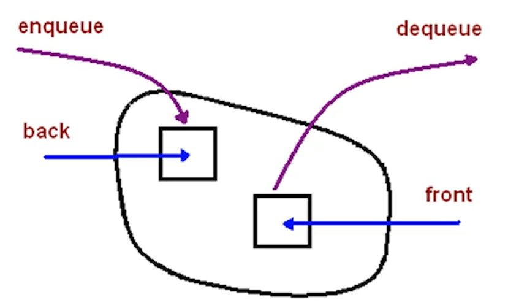
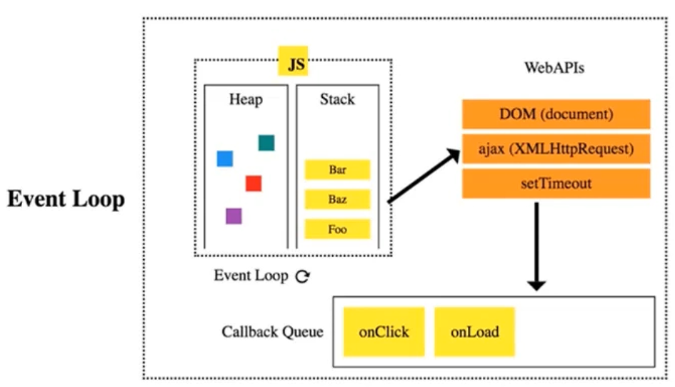
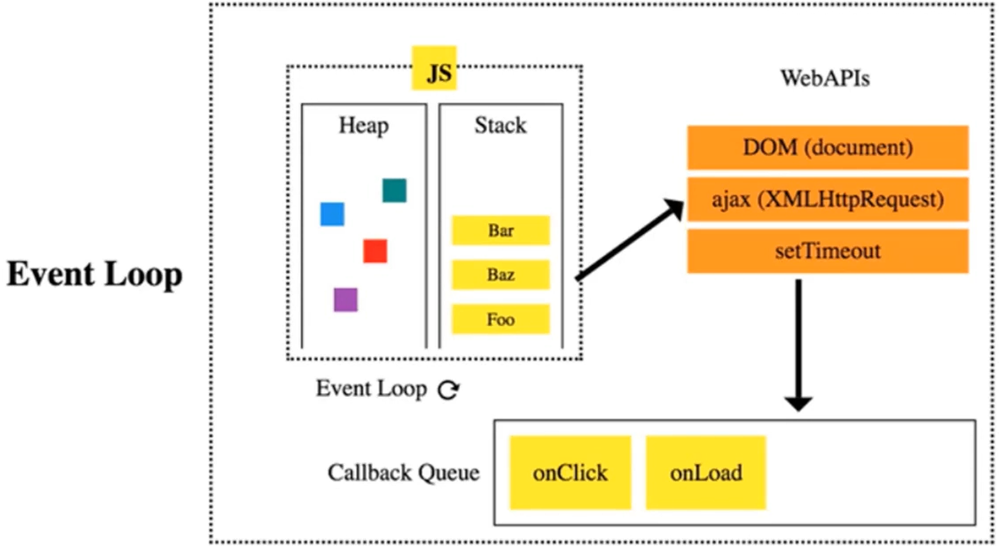
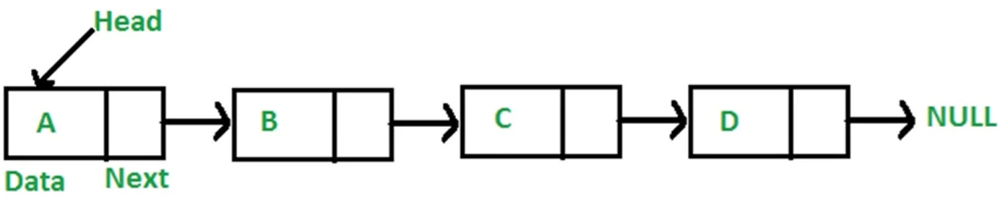

栈
栈的定义
- 一个后进先出的数据结构（最重要的特点，所有后进先出的场景都可以优先考虑栈数据结构）
- JavaScript 中没有栈，但可以用 Array 实现栈的所有功能。

1 | const stack = [] |
push（入栈）、pop（出栈）、stack[stack.length - 1]（查看栈 尾/顶 元素）
栈的使用场景
- 需要后进先出的场景
- 比如：十进制转二进制、判断字符串的括号是否有效、函数调用堆栈
十进制转二进制

- 后出来的余数反而要排到前面
- 把余数依次入栈，然后再出栈，就可以实现余数倒序输出
有效的括号（可有效闭合）

- 越靠后的左括号，对应的右括号或靠前
- 左括号入栈，右括号出栈，最后栈空了就是合法的
函数调用堆栈
1 | function a { |
- 最后调用的函数，最先执行完
- JS 解释器使用栈来控制函数的调用顶序
LeetCode 算法题
20.有效的括号
1 | 输入: "{[]}" |
解题思路
- 对于没有闭合的左括号而言，越靠后的左括号，对应的右括号越靠前
- 满足后进先出，考虑用栈
解题步骤
- 新建一个栈
- 扫描字符串，遇左括号入栈，遇到和栈顶括号类型匹配的右括号就出栈，类型不匹配直接判定为不合法
- 最后栈空了就合法，否则不合法
优化：判断是否为奇数，如果为奇数则永远无法闭合，直接返回 false
1 | var isValid = function(s) { |
执行用时：80 ms, 在所有 JavaScript 提交中击败了83.83%的用户
内存消耗：37.8 MB, 在所有 JavaScript 提交中击败了87.01%的用户
时间复杂度：O(n)，n 为传入字符串的长度（只有一个 for 循环）
空间复杂度：O(n)，n 为传入字符串的长度（极端情况下会把字符串所有的字符全部传入 stack）
单从击败用户来看，空间复杂度比时间复杂度要好一点，后续会用字典来优化这一段代码…
队列
队列的定义
- 一个先进先出的数据结构（与栈正好相反）
- JavaScript 中没有队列，但可以用 Array 实现队列的所有功能。

利用数组模拟
1 | const queue = [] |
队列的使用场景
面对无法同时处理多个问题的场景，通常会使用队列先进先出的特性一个一个解决问题，这样不仅能解决问题还能保证有序性
- 需要先进先出的场景
- 比如：JS 异步中的任务队列、计算最近请求次数
JS 异步中的任务队列

JS 是单线程，无法同时处理异步中的并发任务
使用任务队列先后处理异步任务
计算最近请求次数
- 有新请求就入队，3000ms 前发出的请求出队
- 队列的长度就是最近请求次数
LeetCode 算法题
933.最近的请求次数
1 | 写一个 RecentCounter 类来计算特定时间范围内最近的请求。 |
解题思路
- 越早发出的请求越早不在最近 3000ms 内的请求里
- 满足先进先出，考虑用队列
解题步骤
- 有新请求就入队，3000ms 前发出的请求出队
- 队列的长度就是最近请求次数
1 | var RecentCounter = function() { |
时间复杂度：O(n)，n 为需要被提出队列的请求个数
空间复杂度：O(n)，n 队列长度
前端与队列：事件循环与任务队列

一段 JS 代码刚执行的时候会有一个匿名主事件放在 Callback Queue （任务队列）里面，JS 引擎会去任务队列里面取事件执行，因为 JS 是单线程的，所以每次只能处理一个事件，执行这个事件时，如果里面有一些异步任务就会丢给 WebAPIs 来执行，等待同步任务执行完毕，异步任务开始执行，当 WebAPI 执行任务结束会把回调函数里面的 JS 代码再放到 Callback Queue 里面，然后放到 JS 引擎里面执行
链表
链表定义
- 多个元素组成的列表
- 元素存储不连续，用 next 指针连在一起

数组与链表的区别
- 数组：增删非首尾元素时往往需要移动元素
- 链表：增删非首尾元素，不需要移动元素，只需要更改 next 的指向即可
JS 中模拟链表
- JavaScript 中没有链表这种数据结构
- 可以用 Object 模拟链表
1 | const a = { val: 'a' } |
LeetCode 算法题之删除链表中的节点
237.删除链表中的节点
1 | 请编写一个函数，使其可以删除某个链表中给定的（非末尾）节点。传入函数的唯一参数为要被删除的节点。 |
解题思路
- 无法直接获取被删除节点的上个节点
- 将被删除节点转移到下个节点
解题步骤
- 将被删节点的值改为下个节点的值
- 删除下个节点
1 | /** |
时间复杂度：O(1)，无任何循环
空间复杂度：O(1)，无任何数组或者矩阵
LeetCode 算法题之反转链表
206.反转链表
1 | 反转一个单链表。 |
解题思路
- 反转两个节点：将 n+1 的 next 指向
- 反转多个节点：双指针遍历链表，重复上述操作
解题步骤
- 双指针一前一后遍历链表
- 反转双指针
1 | /** |
时间复杂度：O(n)，有一个 while 循环
空间复杂度：O(1)，定义了一个变量
LeetCode 算法题之两数相加
2.两数相加
1 | 给你两个 非空 的链表，表示两个非负的整数。它们每位数字都是按照 逆序 的方式存储的，并且每个节点只能存储 一位 数字。 |
解题思路
- 小学数学题，模拟相加操作
- 需要遍历链表
解题步骤
- 新建一个空链表
- 遍历被相加的两个链表，模拟相加操作，将个位数追加到新链表上，将十位数留到下一位去相加
1 | /** |
时间复杂度：O(n)，n 为两链表长度的较大值
空间复杂度：O(n)，n 为两链表长度的较大值
LeetCode 算法题删除排序链表中的重复元素
83.删除排序链表中的重复元素
1 | 给定一个排序链表，删除所有重复的元素，使得每个元素只出现一次 |
解题思路
- 因为链表是有序的，所以重复元素一定相邻
- 遍历链表，如果发现当前元素和下个元素值相同，就删除下个元素值
解题步骤
- 遍历链表，如果发现当前元素和下个元素值相同，就删除下个元素值
1 | /** |
时间复杂度：O(n)，n 为链表长度
空间复杂度：O(1)
LeetCode 算法题之环形链表
141.环形链表
1 | 给定一个链表，判断链表中是否有环。 |
解题思路
- 用一快一慢两个指针遍历链表，如果指针能够相逢，那么链表就有圈
解题步骤
- 用一快一慢两个指针遍历链表，如果指针能够相逢，就返回 true
- 遍历结束后，还没有相逢就返回 false
1 |
时间复杂度：O(n)，n 为两链表长度的较大值
空间复杂度：O(n)，n 为两链表长度的较大值
前端与链表：JS 中的原型链
- 原型链的本质是链表
- 原型链上的节点是各种原型对象，比如：Function.prototype,、Object.prototype
- 原型链通过 _ proto_ 属性连接各种原型对象
（具体参考博客文章原型与原型链）
原型链知识点
- 如果 A 沿着原型链能找到 B.prototype，那么 A instanceof B为 true
- 如果在 A 对象上没有找到 ⅹ 属性，那么会沿着原型链找 ⅹ 属性
面试题一
instanceof 的原理，并用代码实现
答：
1
2
3
4
5
6
7
8
9
10
11
12
13
14
15
16// 如果 A 沿着原型链能找到 B.prototype，那么 A instanceof B为 true
// 解法：遍历 A 的原型链，如果找到 B.prototype，返回 true，否则返回 false
const instanceOf = (A, B) => {
let p = A
while (p) {
// p 指针（也就是遍历原型链的指针）
if (p === B.prototype) {
return true
}
p = p.__proto__
}
return false
}
const b = function () {}
const c = []
console.log(instanceOf(1, Object))
面试题二
1 | var foo = {} |
- 知识点：如果在 A 对象上没有找到 ⅹ 属性，那么会沿着原型链找 ⅹ 属性
- 解法：明确 foo 和 F 变量的原型链，沿着原型链找 a 属性和 b 属性
value a、undefined、value a、value b
前端与链表：使用链表指针获取 JSON 的节点值
1 | const json = { |